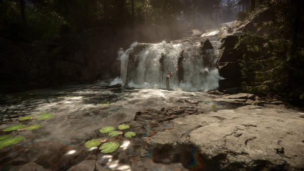
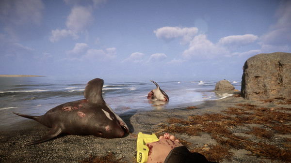
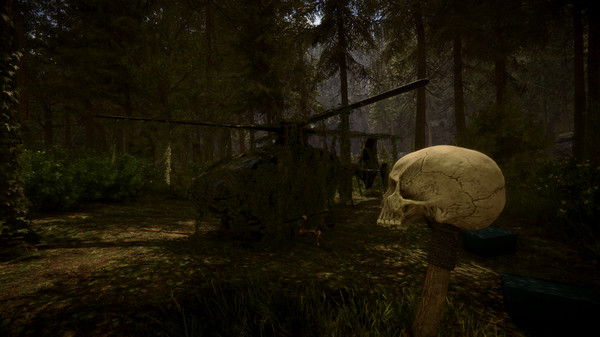

FYC://Sons Of The Forest v33002
=-=-=-=-=-=-=-=-=-=-=-=-=-=-=-=-=-=-=

Home
Download/Stream:
Torrent
Magnet
Play now (Stream)
Descption:

Title: Sons Of The Forest
Genre: Action, Adventure, Indie, Simulation, Early Access
Developer: Endnight Games Ltd
Publisher: Newnight
Release Date: 23 Feb, 2023
About This Game
Sent to find a missing billionaire on a remote island, you find yourself in a cannibal-infested hellscape. Craft, build, and struggle to survive, alone or with friends, in this terrifying new open-world survival horror simulator.
System Requirements
Minimum:
Requires a 64-bit processor and operating systemOS: 64-bit Windows 10Processor: INTEL CORE I5-8400 or AMD RYZEN 3 3300XMemory: 12 GB RAMGraphics: NVIDIA GeForce GTX 1060 3GB or AMD Radeon RX 570 4GBDirectX: Version 11Storage: 20 GB available spaceAdditional Notes: SSD (Preferred)
Recommended:
Requires a 64-bit processor and operating systemOS: 64-bit Windows 10Processor: INTEL CORE I7-8700K or AMD RYZEN 5 3600XMemory: 16 GB RAMGraphics: NVIDIA GeForce 1080Ti or AMD Radeon RX 5700 XTDirectX: Version 11Storage: 20 GB available spaceAdditional Notes: SSD (Preferred)
>

